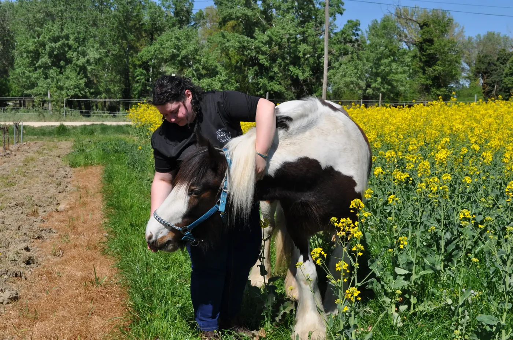
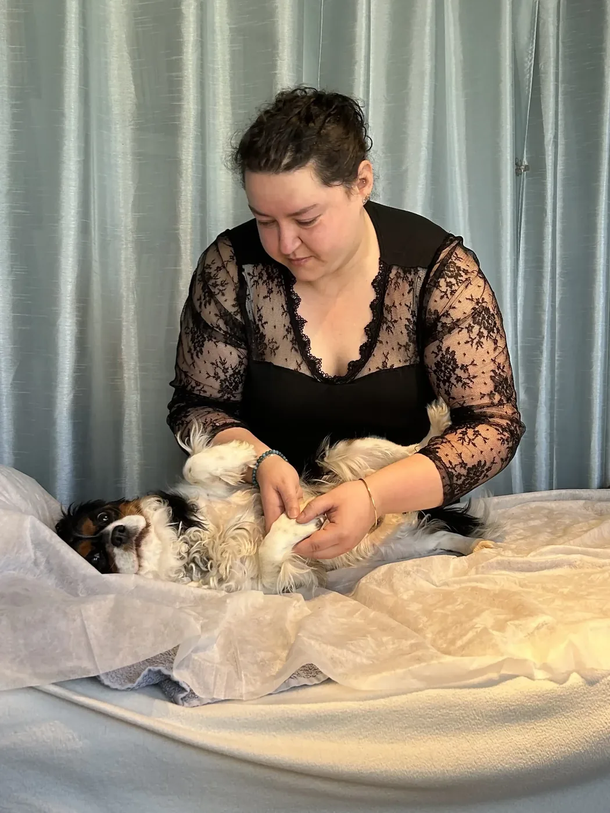
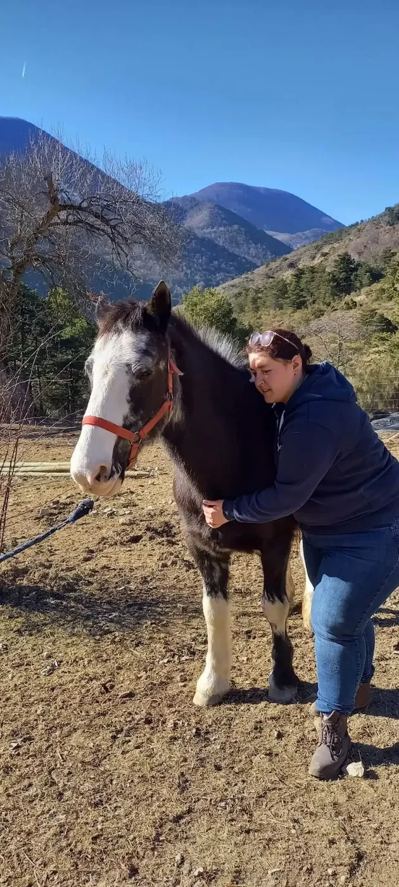

À domicilePACA · Occitanie · DrômeÀ distanceFrance & international
L'approche
Écouter ce qui ne se dit pas.
Chaque comportement raconte quelque chose. Chaque tension porte une information. Mon rôle est de créer l'espace où l'animal peut être entendu dans toutes ses dimensions.
Deux pratiques complémentaires relient le corps, l'émotion et l'environnement de votre compagnon — avec douceur, présence et sans jamais forcer son rythme.
Les accompagnements
Deux portes d'entrée. Un même vivant.

Le corps comme point d'écoute
Soin énergétique
Une lecture corporelle issue de l'ostéopathie animale, associée au magnétisme, au Reiki et à la Médecine Traditionnelle Chinoise.
Tensions et inconfort physique
Stress, anxiété, hypersensibilité
Convalescence et transitions
Prévention et vitalité
70 €Domicile –30 km ou distance 80 € au-delà de 30 km

Le ressenti comme langage
Communication intuitive
Un échange en temps réel pour comprendre ses émotions, éclairer un comportement et renforcer la relation qui vous unit.
Bilan émotionnel et énergétique
Comportement et traumatisme
Changement de vie
Relations et environnement
70 €Domicile –30 km ou distance 80 € au-delà de 30 km
Ces pratiques accompagnent le bien-être de l'animal. Elles ne remplacent jamais un avis, un diagnostic ou un suivi vétérinaire.
Ce que l'on cherche ensemble
ApaiserComprendreRééquilibrerRelier

Typhaine Leleu Thérapeute animalière
Mon parcours
Du mouvement au ressenti.
Depuis mon plus jeune âge, les animaux sont mon ancrage. Leur authenticité et leur sensibilité m'ont toujours profondément touchée.
Mon chemin a commencé avec l'ostéopathie animale. Puis une dimension plus subtile s'est ouverte : au-delà des tensions musculaires, j'ai appris à écouter les émotions, les blocages silencieux et les messages profonds.
Aujourd'hui, l'énergétique et la communication animale prolongent naturellement cette première lecture du corps.
L'équilibre au cœur du vivant.
Pendant la séance
Un échange vraiment vivant.
01
Écouter
La séance se déroule en temps réel, à domicile ou par téléphone, pour accueillir ce qui émerge.
02
Dialoguer
Vous posez vos questions au fil de l'échange et nous précisons ensemble chaque ressenti.
03
Ajuster
L'accompagnement suit le rythme, l'histoire et les besoins propres à votre animal.
Instants partagés
Les animaux, sans mise en scène.
Premier échange
Parlons de votre animal.
Un message vocal ou un SMS suffit pour commencer. Je vous réponds dans les meilleurs délais.